Software Installation# Installation Guide#- Software- Installation
This guide provides step-by-step instructions for installing all required software to use OptiPlant.
Julia InstallationThis guide will help you install all the required software and packages to run OptiPlant successfully.This- guide- provides- step-by-step- instructions- for- installing- all- required- software- to- use- OptiPlant.
Required Julia Version
Package manager prompt in screenshots shows "(@v1.8) pkg>", indicating examples use Julia v1.8 environment.## Overview##- Julia- Installation
Step-by-Step Julia Installation Process
- Go to https://julialang.org/downloads/ and download the Julia version corresponding to your operating systemOptiPlant requires:###- Download- Julia
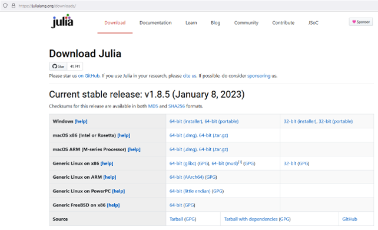
1. Julia (programming language and environment)Figure 3: Julia download page
Visual Studio Code (code editor with Julia extension)1.- Go- to- https://julialang.org/downloads/
Run the Julia installer and install the program
Julia packages (optimization and data handling libraries)2.- Download- the- Julia- version- corresponding- to- your- operating- system
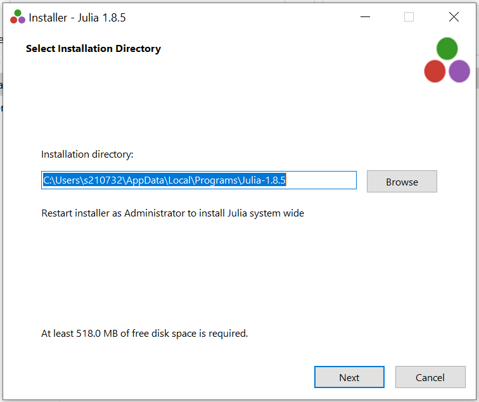
Figure 4: Julia installer steps4. Microsoft Excel (for input preparation and results visualization)3.- Run- the- Julia- installer- and- install- the- program
- Important: Tick the box "Add Julia to PATH" only if you already have Visual Studio Code already installed on your PC
- If the installation is successful, the message will appear: "You just got Julia on your PC!"
 ###- Installation- Options
###- Installation- Options
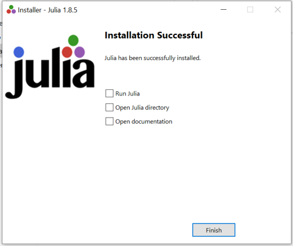
Figure 5: Successful installation screen
1. Julia InstallationImportant:- Tick- the- box- "Add- Julia- to- PATH"- only- if- you- already- have- Visual- Studio- Code- installed- on- your- PC.
System Requirements
Not specified in the presentation.
Download and Install Julia###- Verification
Verification Steps
Successful installation screen: "You just got Julia on your PC!"
- Go to https://julialang.org/downloads/If- the- installation- is- successful,- you- will- see- the- message:- "You- just- got- Julia- on- your- PC!"
VS Code Installation
- Download the Julia version corresponding to your operating system
VS Code Setup Instructions
Note:- Examples- in- this- guide- use- Julia- v1.8- environment- as- shown- in- package- manager- prompts.
- Go to https://code.visualstudio.com/Download and download the version for your operating system
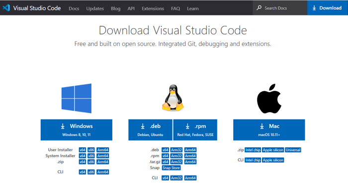
Figure 6: VS Code download page##- VS- Code- Installation
- Run the installer and install the program3. Run the Julia installer and install the program
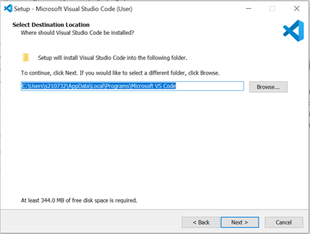
4. Important: Tick the box "Add Julia to PATH" only if you already have Visual Studio Code installed on your PC###- Download- VS- CodeFigure 7: VS Code installer
- Important: During installation, tick "Add to PATH (requires shell restart)"
1.- Go- to- https://code.visualstudio.com/Download
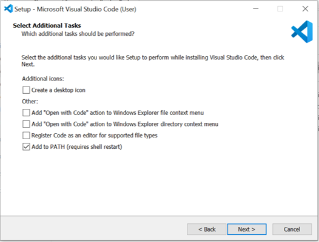
Figure 8: VS Code "Add to PATH" option2.- Download- the- version- for- your- operating- system
- If successful, message shown: "You just got VS Code on your PC! Next step is to add the corresponding extensions and save them in an 'environment'."5. If the installation is successful, you will see: "You just got Julia on your PC!"3.- Run- the- installer- and- install- the- program
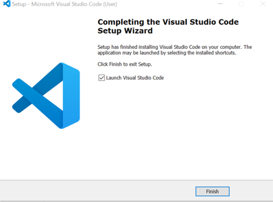
Figure 9: VS Code installation success message
###- Installation- Configuration
Required Extensions
"Julia" extension in VS Code (provides Julia language support and a Julia REPL).
System RequirementsCritical:- During- installation,- tick- "Add- to- PATH- (requires- shell- restart)"
Configuration Steps
- Open VS Code → View > Extensions → search "Julia" → Install
Julia works on:###- Verification
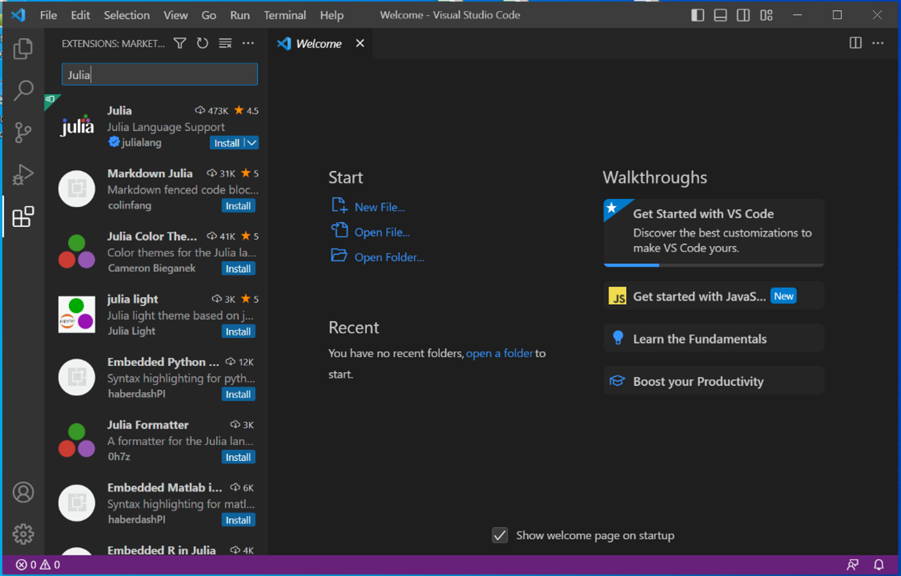
Figure 10: VS Code Extensions view for "Julia"- Windows: Windows 10 or later
- Start Julia REPL each session via Command Palette: press "Ctrl+Shift+P", type "Start Julia" or "Julia: Start REPL"- macOS: macOS 10.14 or later If- successful,- you- will- see- the- message:- "You- just- got- VS- Code- on- your- PC!- Next- step- is- to- add- the- corresponding- extensions- and- save- them- in- an- 'environment'."
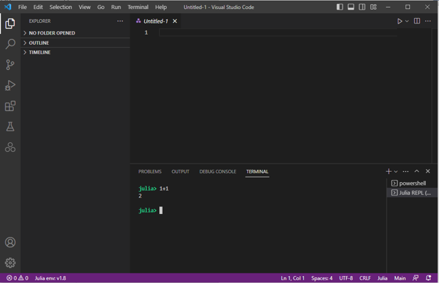
- Linux: Recent distributions with glibc 2.17 or laterFigure 11: Command Palette showing "Julia: Start REPL"
##- VS- Code- Configuration
Integration with Julia
2. Visual Studio Code Installation
The Julia extension integrates the REPL (console) inside VS Code, enabling executing Julia code and interacting with the package manager.
###- Install- Julia- Extension
Packages Installation
Download and Install VS Code
Required Julia Packages List
1.- Open- VS- Code
JuMP (formulate optimization problems)
HiGHS or Gurobi (LP solvers; only one is required)1. Go to https://code.visualstudio.com/Download2.- Go- to- View- >- Extensions-
DataFrames (structured data)
CSV (read CSV files)2. Download the version for your operating system3.- Search- "Julia"
XLSX (read Excel .xlsx files)
Optional for plotting/visualization: Plots, StatsPlots, PrettyTables4.- Install- the- Julia- extension
Installation Commands
){kind=link}
- Enter package manager by pressing "]" in the Julia REPL (prompt changes from "julia>" to something like "(@v1.8) pkg>")###- Start- Julia- REPL
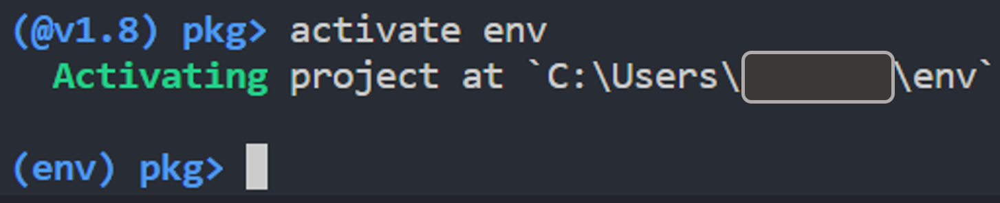
3. Run the installer and install the programFigure 12: Package manager prompts illustrating activation
Important: During installation, tick "Add to PATH (requires shell restart)"Each- session,- start- the- Julia- REPL- via- Command- Palette:
Activate environment: type "activate env" (prompt changes to "(env) pkg>" and creates/switches to folder env)
1.- Press- Ctrl+Shift+P
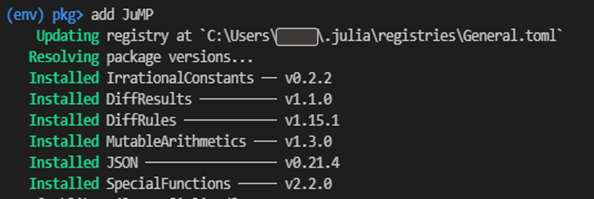
Figure 13: Adding packages in activated environment2.- Type- "Start- Julia"- or- "Julia:- Start- REPL"
- Install packages: type "add PACKAGE_NAME" (e.g., "add JuMP", "add HiGHS", "add DataFrames", "add CSV", "add XLSX")
- Check installed packages: type "status" (run after activating env)5. If successful, you will see: "You just got VS Code on your PC! Next step is to add the corresponding extensions and save them in an 'environment'."The- Julia- extension- integrates- the- REPL- (console)- inside- VS- Code,- enabling- executing- Julia- code- and- interacting- with- the- package- manager.
Solver Setup (Gurobi, HiGHS, etc.)
HiGHS (Recommended)##- Package- Installation
##-Package-Installation){kind=link}
HiGHS: Recommended open-source solver for OptiPlant. Install via "add HiGHS".
Gurobi (Optional, Commercial)
Gurobi (optional, commercial; faster alternative; same results as HiGHS):### Install Julia Extension###- Required- Julia- Packages
Get a license via https://www.gurobi.com/ (Downloads & Licenses). After registration, obtain the grbgetkey
Install the latest optimizer from https://www.gurobi.com/downloads/gurobi-optimizer-eula/
Restart system if not done automatically1. Open Visual Studio CodeOptiPlant- requires- the- following- packages:
Open Command Prompt and enter the saved key: "grbgetkey" and save the license in the default location
Go to View → Extensions (or press
Ctrl+Shift+X)
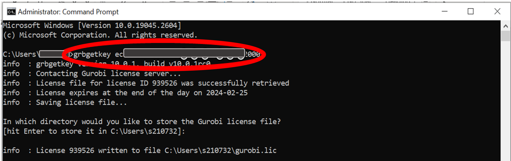
Figure 14: Command Prompt example with "grbgetkey ..." usage3. Search for "Julia"– JuMP- – Formulate- optimization- problems
- In Julia package manager, "add Gurobi"4. Install the Julia extension (provides Julia language support and REPL)– HiGHS- or- Gurobi- – LP- solvers- (only- one- required)
Dependency Management– DataFrames- – Structured- data- handling
Use Julia environments. Activate an "env" environment and install required packages into it. Use "status" to verify.– CSV- – Read- CSV- files
Troubleshooting Package Issues– XLSX- – Read- Excel- .xlsx- files
If "Package X not found": ensure the environment is activated ("activate env"), verify with "status", install missing package with "add PACKAGE_NAME", and ensure the code calls the package at the top (see Troubleshooting section for details and figure references).### Configure Julia in VS Code
Installation ProblemsOptional- packages- for- plotting/visualization:
Julia or VS Code not recognized: Ensure "Add to PATH" options were ticked during installation (Julia PATH guidance and VS Code's "Add to PATH (requires shell restart)")Each time you start working with Julia:– Plots
Gurobi license issues: Ensure you ran "grbgetkey" in Command Prompt and saved license to default location
– StatsPlots- -
Next Steps
- Press
Ctrl+Shift+Pto open Command Palette– PrettyTables
Once installation is complete:
Type "Start Julia" or "Julia: Start REPL"
Understand File Structure - Learn the OptiPlant organization
Try Examples - Run sample scenarios and troubleshooting3. This will start the Julia REPL (console) inside VS Code###- Installation- Steps
Technical Reference - Detailed specifications and file formats
1.- Enter- Package- Manager
3. Julia Packages Installation- - - Press- ]- in- the- Julia- REPL.- The- prompt- changes- from- julia>- to- something- like- (@v1.8)- pkg>.
Enter Package Manager2.- Activate- Environment
In the Julia REPL, press
]to enter package manager mode- - - ```juliaThe prompt will change from
julia>to something like(@v1.8) pkg>- - - activate- env
- ```
- - -
- The- prompt- changes- to-
(env)- pkg>- and- creates/switches- to- folder- env.
- The- prompt- changes- to-
Create and Activate Environment
3.- Install- Packages
Type:
activate env- - -This creates/switches to a folder called "env"- - - Install- each- package- using- the-
add- command:The prompt changes to
(env) pkg>- - - ```julia
- add- JuMP
- - - add- HiGHS
- add- DataFrames
Install Required Packages- - - add- CSV
- add- XLSX
Install the following packages one by one:- - - ```
add JuMP # Optimization modeling- - -
add HiGHS # Open-source solver (recommended)- - - Check- installed- packages:
add DataFrames # Structured data handling- - - ```julia
add CSV # Read CSV files- - - status
add XLSX # Read Excel files- - - ```
- Run- this- command- after- activating- the- env- environment.
##- Solver- Setup
Optional Packages
###- HiGHS- (Recommended- – Open- Source)
For plotting and visualization (optional):
add Plots
add StatsPlots **Installation:**
add PrettyTables```julia
add- HiGHS
### Verify Installation
No- additional- configuration- required.
Type `status` to check installed packages:
###- Gurobi- (Optional- -- Commercial)
(env) pkg> statusGurobi- is- a- faster- alternative- that- provides- the- same- results- as- HiGHS.
####- Gurobi- Installation- Steps
This will show all packages installed in your environment.
1.- **Get- License**
## 4. Solver Setup- - - -- Visit- https://www.gurobi.com/- (Downloads- &- Licenses)
- - - -- Register- and- obtain- the- `grbgetkey`
### HiGHS (Recommended - Open Source)
2.- **Install- Gurobi- Optimizer**
HiGHS is the recommended solver for OptiPlant:- - - -- Download- the- latest- optimizer- from- https://www.gurobi.com/downloads/gurobi-optimizer-eula/
- - - -- Install- the- software
julia
add HiGHS3.- Restart- System
**Advantages:**4.- **Activate- License**
- Open-source and free- - - -- Open- Command- Prompt
- Fast performance- - - -- Enter- the- saved- key:- `grbgetkey- <your-key>`
- Same results as commercial alternatives- - - -- Save- the- license- in- the- default- location
- No license required
5.- **Install- Julia- Package**
### Gurobi (Optional - Commercial)- - - ```julia
- - - add- Gurobi
If you prefer Gurobi (commercial solver with identical results):- - - ```
1. Get a license at [https://www.gurobi.com/](https://www.gurobi.com/)##- Dependency- Management
2. After registration, obtain the license key
3. Install the Gurobi Optimizer from [https://www.gurobi.com/downloads/gurobi-optimizer-eula/](https://www.gurobi.com/downloads/gurobi-optimizer-eula/)###- Using- Julia- Environments
4. Restart your system if not done automatically
5. Open Command Prompt and enter the license key:OptiPlant- uses- Julia- environments- for- dependency- management:
bash1.- Activate- environment:- activate- env
grbgetkey YOURLICENSEKEY2.- Install- packages- into- the- activated- environment
``3.- **Check- status**:-status`- to- verify- packages
4.- Activate- each- session:- Remember- to- activate- the- environment- each- time- you- start- Julia
###- Package- Verification
Save the license in the default location
In Julia package manager:
add GurobiAfter- installation,- verify- packages- are- available:
Note: Both HiGHS and Gurobi provide identical results. HiGHS is recommended as it's open-source.```julia
using- JuMP
5. Verification Stepsusing- HiGHS- - #- or- using- Gurobi
using- DataFrames
Test Julia Installationusing- CSV
using- XLSX
Open Julia REPL```
Type:
println("Hello OptiPlant!")You should see the message printed##- Troubleshooting- Installation
Test Package Installation###- Package- Not- Found- Error
In Julia REPL:Error:- Package- X- not- found
using JuMP, HiGHS, DataFrames, CSV, XLSX**Likely- causes:**
println("All packages loaded successfully!")-- Environment- not- activated- before- running- code
– Package- not- installed
– Package- not- called- in- code
Test VS Code Integration
Solution:
Create a new file with
.jlextension1.- In- Julia- REPL,- press-]- to- enter- package- managerWrite some Julia code2.- Type-
activate- envUse
Ctrl+Enterto execute code in the REPL3.- Check- installed- packages- with-status
4.- If- missing,- install- with- add- PACKAGE_NAME
Troubleshooting5.- Ensure- code- calls- necessary- packages- at- the- beginning
Julia Not Recognized###- Installation- Problems
Problem: "Julia is not recognized as an internal or external command"Julia- or- VS- Code- not- recognized:
– Ensure- "Add- to- PATH"- options- were- selected- during- installation
Solution: – For- VS- Code:- "Add- to- PATH- (requires- shell- restart)"
Ensure "Add Julia to PATH" was checked during installation– For- Julia:- "Add- Julia- to- PATH"- (if- VS- Code- already- installed)
Restart your computer
Reinstall Julia with PATH option checkedGurobi- license- issues:
– Ensure- you- ran- grbgetkey- <your-key>- in- Command- Prompt
VS Code Cannot Find Julia– Save- license- to- default- location
– Restart- system- after- Gurobi- installation
Problem: Julia extension not working properly
##- Next- Steps
Solution:
Open VS Code Settings (
Ctrl+,)Once- installation- is- complete:Search for "Julia executable path"
Set the correct path to Julia executable1.- Download- OptiPlant- – Get- the- tool- files
Restart VS Code2.- File- Structure- – Understand- the- project- organization- -
3.- Examples- – Start- with- practical- examples
Package Installation Fails4.- Troubleshooting- – Common- issues- and- solutions
Problem: Cannot install packages or dependency errors
Solution:
- Ensure you're in package mode (press
]) - Try:
resolvethen retry installation - Update registry:
registry update - Check internet connection
Environment Issues
Problem: Packages not found when running code
Solution:
- Activate the correct environment:
activate env - Verify packages:
status - Ensure your Julia script has
usingstatements for required packages
Next Steps
Once installation is complete:
- Download OptiPlant - Get the latest version
- Understand File Structure - Learn the OptiPlant organization
- Run Your First Model - Execute a sample case
- Explore Examples - Try different scenarios
System Requirements Summary
| Component | Minimum | Recommended |
|---|---|---|
| RAM | 4 GB | 8 GB+ |
| Storage | 2 GB | 5 GB+ |
| Processor | Any modern CPU | Multi-core CPU |
| Operating System | Windows 10, macOS 10.14, Linux | Latest versions |
Typical solve time: Less than 5 minutes on a personal computer using HiGHS solver.
Installation Complete! You're now ready to use OptiPlant for power-to-X system optimization.